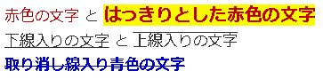
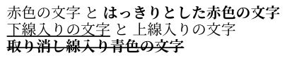

12th August 2022 at 11:45am
「asciidoctor-pdfによるPDF出力(導入)」でPDF出力ができるようになりましたが、実は文字色設定しても反映されません。
[red]*赤色の文字* と [big red yellow-background]*はっきりとした赤色の文字* +
[underline]*下線入りの文字* と [overline]*上線入りの文字* +
[blue line-through]*取り消し線入り青色の文字*と記述した場合、以下のような出力を期待します。

しかし、デフォルトの「asciidoctor-pdf 」で出力すると、以下のようになります。

文字色が反映されていません。。。
スタイルファイル( テーマファイル)におけるRoleカテゴリーを定義することで対応します。スタイルファイルは、フォント種・フォントサイズ・フォントタイプ・行間・ページのマージン・フッターやヘッダーなどを設定することができます。
スタイルファイルに以下を追記してください。
#------
# Role
#------
role:
merge: true
white:
font_color: #ffffff
silver:
font_color: #c0c0c0
gray:
font_color: #808080
black:
font_color: #000000
red:
font_color: #ff0000
maroon:
font_color: #800000
yellow:
font_color: #ffff00
olive:
font_color: #808000
lime:
font_color: #00ff00
green:
font_color: #008000
aqua:
font_color: #00ffff
teal:
font_color: #008080
blue:
font_color: #0000ff
navy:
font_color: #000080
fucsia:
font_color: #ff00ff
purple:
font_color: #800080
「defalut-theme.yml」にはRoleカテゴリーがすでに記載されています。拡張する場合はmerge: trueなどを利用してください。
ちなみに、スタイルファイルについては、asciidoctor-pdfによるPDF出力(フォント)やスタイルファイルについての記事でも触れています。
文字色問題に関してはずいぶん右往左往しました。しばらく、この方法で様子を見ます。
（上線に関しては、修正方法が見当たりません。。。。）
本記事は、「Asciidoctor::Discussion の Color for Text 」を参考にしています。